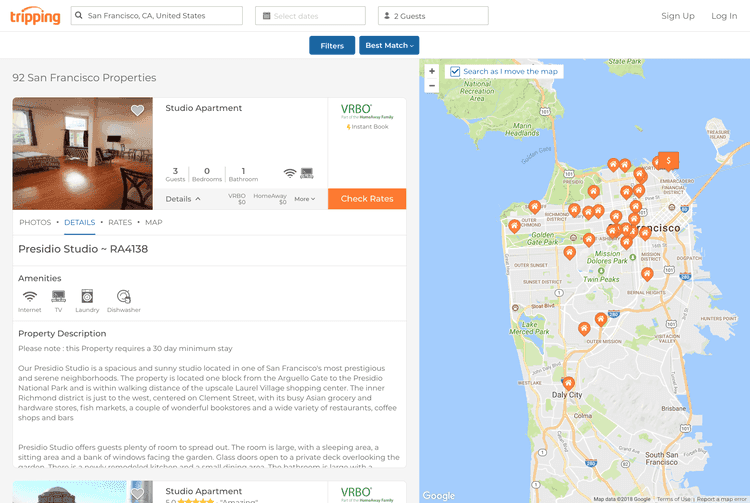
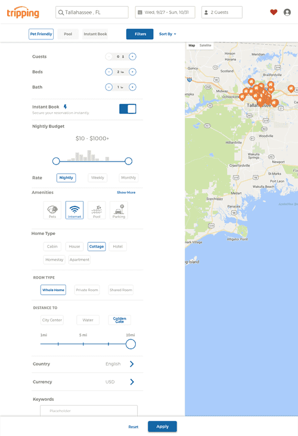
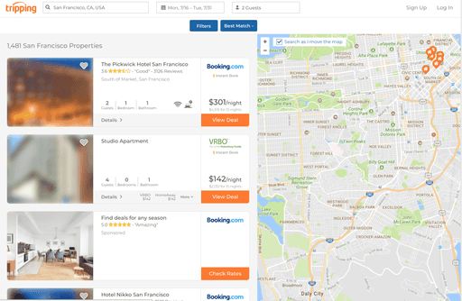
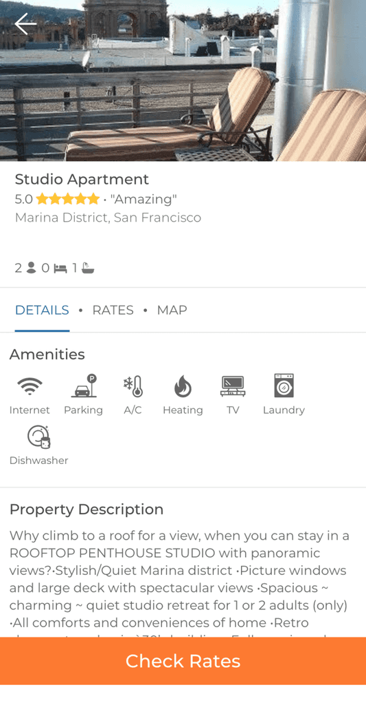
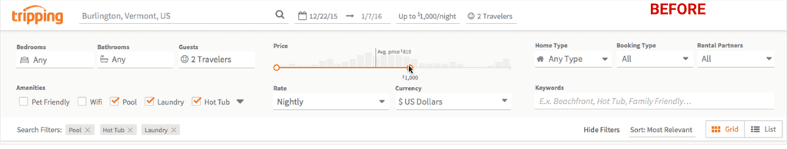
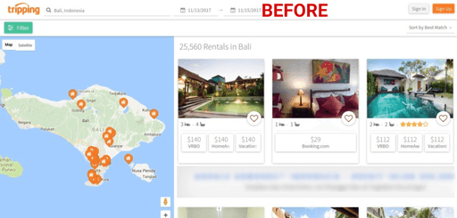
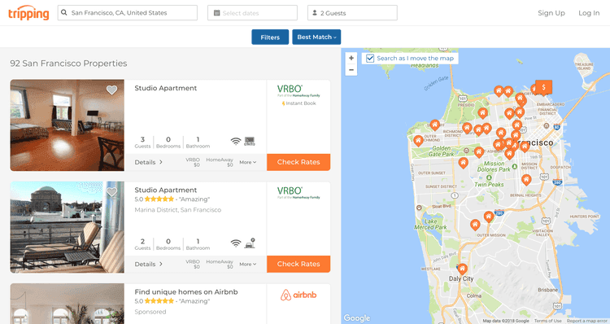
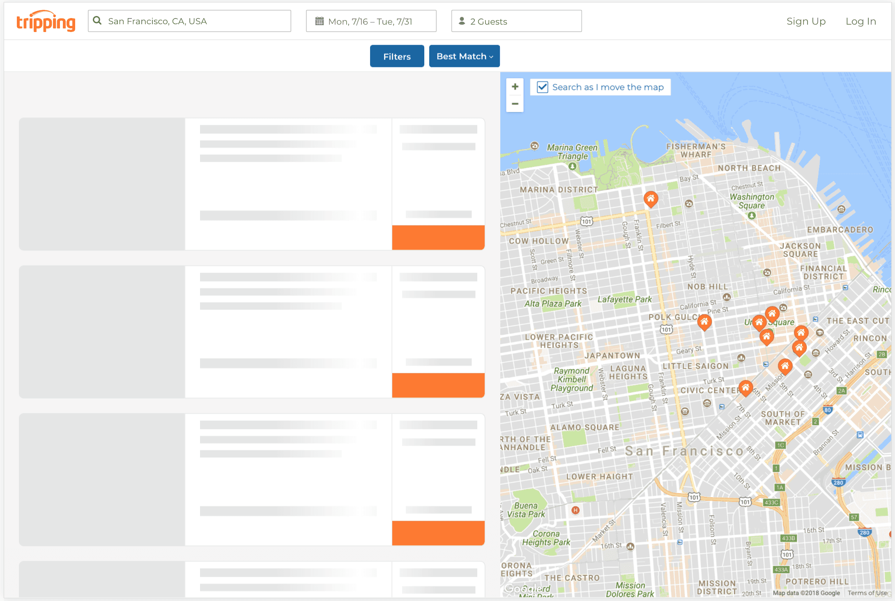

Tripping
This was my first UX role. Tripping had never had a dedicated UX designer. I started with an audit of homepage, search, and listings, then worked with engineering on ML photo ranking so the first image wasn’t a dark kitchen.

This was my first UX role. Tripping had never had a dedicated UX designer. I started with an audit of homepage, search, and listings, then worked with engineering on ML photo ranking so the first image wasn’t a dark kitchen.
Search is the product: people compare a pile of rentals and drown in amenities, prices, location, and availability. I had to make that scannable without hiding the details they need to book.
More people browsed on phones; bookings still happened on desktop. Both had to work.
Research surfaced a problem that wasn’t in the original brief: photos. Hosts upload whatever — dark, blurry, one good picture buried at the end. I worked with engineering on a machine-learning ranker so the first photo wasn’t arbitrary.
Filters narrow without a wall of options. Price, place, and the one or two amenities that matter sit up front.
The photo ranking was the part people felt. Same listings, better first impression. Engagement and conversion both moved. I don’t have the exact numbers in front of me anymore, so I’m not going to invent them.
The brief didn’t mention the photos. That’s usually how it goes.







